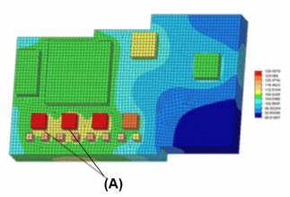
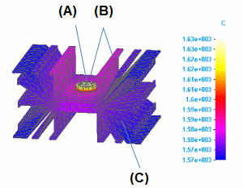

Thermal studies
In Solid Edge Simulation, you can analyze the thermal conditions of a model using thermal studies and one or more thermal loads in the Thermal Loads group. In the Create Study dialog box, the following thermal study types are available:
-
Steady State Heat Transfer
-
Steady State Heat Transfer + Linear Static
-
Steady State Heat Transfer + Linear Buckling
-
Transient Heat Transfer
For information about using thermal loads, see Defining thermal studies.
Types of thermal studies
The following thermal study types are available:
- Heat transfer analysis
-
Heat transfer studies are thermal studies that analyze heat flow due to differences in temperature, as energy flows from regions of higher temperature to regions of lower temperature. You can use heat transfer to evaluate temperature distribution and maximum temperatures at different stages in the operation of your design.
Solid Edge Simulation provides two types of heat transfer analysis:
- Steady state heat transfer
-
A steady state heat transfer study simulates the thermal conditions of an object when it reaches equilibrium with its surroundings. At this operational stage of the model, heat flow and temperature are constant (in a steady state).
- Transient heat transfer
-
A transient heat transfer study simulates the effects of heat energy within and around an object over a period of time, before a steady-state temperature is reached.
Example:Use a steady state study to determine the final state and maximum temperature of the model, and use a transient heat study to see the temperature changes during the operation of the model or at a critical or specific time.
- Thermal stress analysis
-
Simulates thermal stress by coupling a heat transfer analysis with a structural analysis. Thermal stress analysis shows the deformation that occurs when temperature changes cause an object to expand or shrink. For more information, see Using coupled studies for thermal stress analysis.
To learn how to define and review a thermal study on a water pipe, try the practice activity, Perform a thermal stress analysis.
Thermal study examples
You can use thermal studies to assist in determining the as-designed electrical performance of the components on a printed circuit board (PCB). Thermal studies also help predict the temperature at which a component or a circuit board overheats and burns.
Some additional scenarios that you can analyze using thermal studies include:
-
Natural or forced convection from the front and back surfaces.
-
Conduction from the edges of the PCB to walls of an electronics box.
-
Conduction through rigid or flexible connectors to other PCBs.
-
Conduction from the PCB to the mounting frame.
-
Conduction to heat sinks.
Using a model of a printed circuit board, you can evaluate whether the heat sink, which is not shown in the image, works as designed.

You can create a steady state heat transfer study in which:
-
The chips (A) are defined as a heat source.
-
A free convection load is applied to board surfaces.
-
The results are a temperature distribution plot on the PCB, with the location of minimum and maximum values identified.
You can confirm the trouble spots identified by the results using prototype board measurements.
This assembly model of an electrical component contains two design bodies: a heat source (the button in the center) and a heat sink (the body with fins).

You can create a steady state heat transfer study in which:
-
A heat generation load is applied to the heat source (A).
-
A heat flux load is applied to the surfaces that reflect the heat from the heat source (B).
-
To dissipate heat from the model, a free convection load is applied to the entire heat sink (C) using the Feature selection type option.
-
The results show a temperature distribution plot.
Based on the results, you can modify the model so that it dissipates heat better. For example, you can elongate the tabs on the heat sink.
How do I
Verify simulation material propertiesCreate a study
Create a study using a simplified model
Define a coupled study for thermal stress analysis
Assign units in studies
Define and review a transient heat study
Define a harmonic frequency response study
Learn more
Creating and using studiesUsing materials in studies
Modifying studies
Structural studies
Using steady state heat transfer studies
Coupled studies
Harmonic response studies
Create and solve a study using GD optimized model
Create and solve a study using an STL model
Defining thermal studies
Look up more details
Create Study (or Modify Study) dialog boxTransient Heat Options dialog box
Options: Harmonic Frequency Analysis dialog box